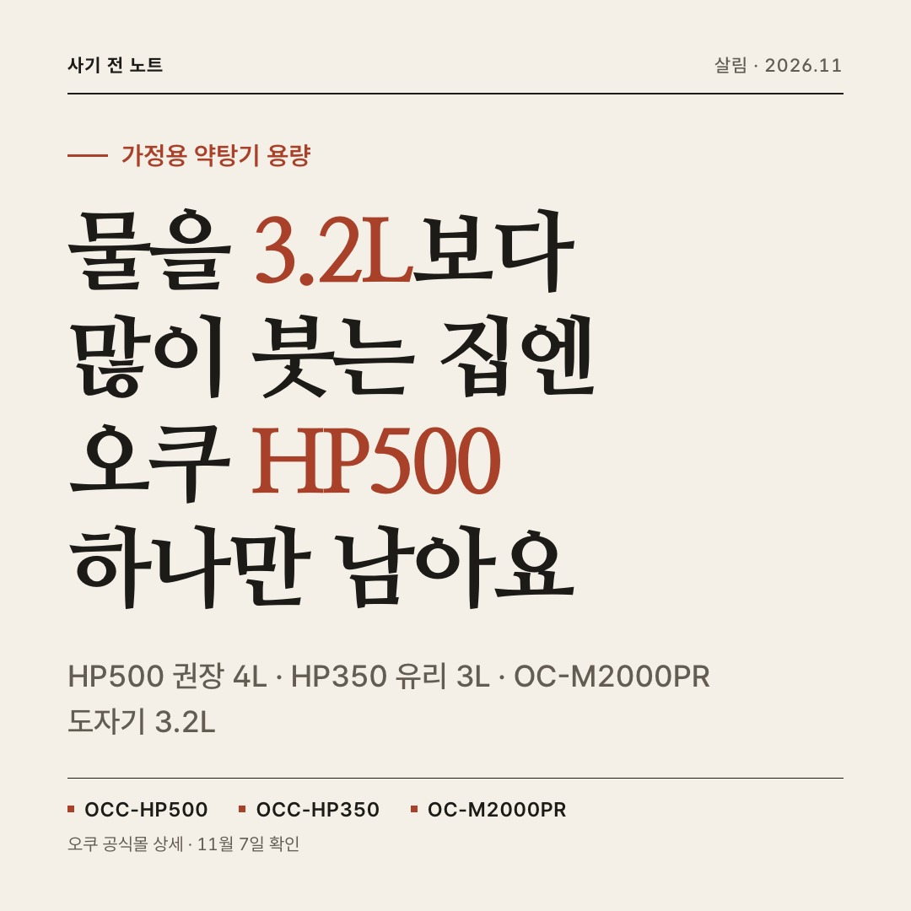
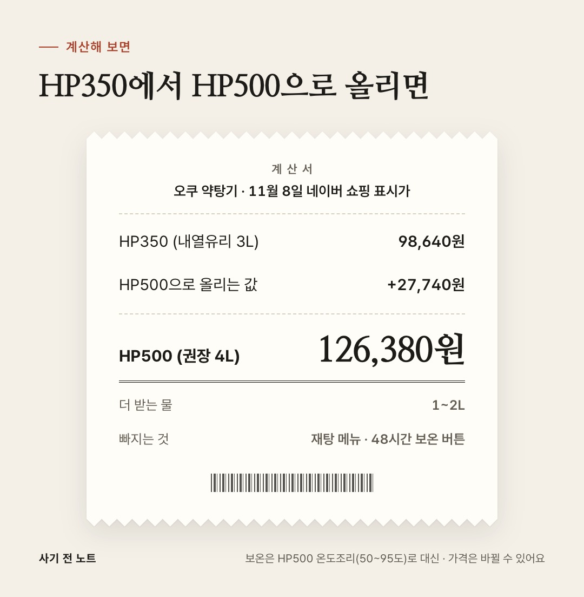

살림
가정용 약탕기 몇 리터가 맞을까? 물 3.5L 넘게 붓는 집은 오쿠 HP500
이 포스팅은 네이버 쇼핑 커넥트 활동의 일환으로, 판매 발생 시 수수료를 제공받습니다.
가정용 약탕기는 한 번에 붓는 물의 양으로 고르면 돼요. 오쿠 약탕기 세 모델 중 물 3.5~4L가 다 들어가는 건 대용량 한방 멀티쿠커 OCC-HP500(권장 4L·최대 5L) 하나뿐이고, 유리 탕기 HP350은 3L, 도자기 OC-M2000PR은 3.2L에서 멈춰요. 약재 한 봉지에 물을 4L 가까이 잡는 집이라면 두 번 나눠 달이는 수고 없이 HP500 하나로 끝나요.
▶ 물 3.5~4L를 한 번에 달일 집, 오쿠 대용량 한방 멀티쿠커 OCC-HP500(11월 8일 네이버 쇼핑 표시가 126,380원): https://naver.me/GjyEMHgO

세 모델, 한눈에 뭐가 다른가요?
| 모델 | 탕기·용량 | 소비전력 | 보온 | 가격 |
|---|---|---|---|---|
| OCC-HP500 | 스테인리스(SUS316) 권장 4L·최대 5L | 1,600W | 별도 메뉴 없음(온도조리로) | 126,380원(11월 8일 네이버 쇼핑) |
| OCC-HP350 | 내열유리 3L | 1,200W | 최대 48시간 | 98,640원(같은 날) |
| OC-M2000PR | 도자기 내솥 3.2L(MAX), 중탕 | 800W | 확인 못함 | 382,000원(11월 7일 판매가) |
HP500 자체 건강메뉴 표부터 재료 35g에 물 3.5L가 기준이에요. 제조사가 잡아 둔 한 번의 양이 나머지 두 모델의 솥을 넘친다는 뜻이에요.
우리 집은 어느 쪽인가요?
- 물 3.5~4L를 한 번에, 국·탕 요리도 같이 → HP500. HP350보다 27,740원 더 내고 물을 1~2L 더 받는 셈이에요.
- 3L 안쪽이고, 달이는 색을 보면서 재탕·보온까지 버튼으로 → HP350. 공식 자료에서 '재탕' 메뉴를 찾은 건 셋 중 이 모델뿐이고 보온은 최대 48시간이에요.
- 도자기 내솥에 중탕으로 달이고 싶고 주방 자리가 넉넉한 집 → OC-M2000PR. 경남 합천에서 만든 도자기 내솥에 압력뚜껑을 닫는 방식이고 정격 800W로 셋 중 가장 낮아요. 대신 가격이 HP500의 약 3배, HP350의 약 3.9배예요.
HP500을 고르면 포기하는 건?
보온 버튼이 따로 없어요. 공식몰 FAQ는 온도조리(50~95도, 5도 단위)로 온도와 시간을 맞춰 보온하라고 하고, 메뉴마다 정해진 시간이 지나면 자동으로 꺼진다고 적었어요.
찜기는 상자를 열어 봐야 알아요. 상품명엔 '찜기 포함'이 붙는데 공식 구성품 표에는 냄비·본체·삼베 주머니·설명서뿐이라, 꼭 필요하면 주문 전에 판매처에 물어보세요.

한 번 달이면 전기는 얼마나 드나요?
오쿠가 표에 적은 HP500 소비전력량은 물 4L 기준 '끓임' 1시간에 0.35kWh예요. 끓임 메뉴(100℃, 1시간 12분)를 한 번 돌리면 약 0.42kWh로, 주택용 전기요금 구간별 1kWh 추가 비용(부가세·기금 포함 약 151~362원)을 곱하면 한 번에 약 63~152원이에요. 우리 집이 평소 어느 구간인지에 따라 이 범위 안에서 정해져요. 급속가열은 1시간 0.72kWh로 두 배쯤 들어요.
유리 탕기 HP350, 사기 전에 알아 둘 것
유리면의 주름·기포·미세 스크래치는 제조 과정 현상이라 그 이유로는 교환·반품이 안 된다는 안내가 있어요. 받자마자 실망할 수 있는 지점이라 미리 알아 두면 좋아요. 물은 MAX~MIN선 사이로 넣으라고 적혀 있어요.
켜 두고 자리를 비워도 되나요?
메뉴 시간이 끝나면 자동으로 꺼진다고 공식 자료에 적힌 건 HP500뿐이었어요. 나머지 둘은 받은 설명서에서 물 높이(MAX·MIN선)와 꺼짐 항목부터 펼쳐 보세요. 세 모델 모두 11월 7일 제품안전정보센터 조회에서 KC 인증 '적합'이었어요.

확인하지 못한 것
HP500 찜기 포함 여부와 찜기를 올린 높이, OC-M2000PR의 재탕·보온 메뉴는 확인하지 못했어요. 숫자는 오쿠 공식몰 상세(11월 7일 확인), 가격은 11월 7~8일 표시값이고 직접 써 본 후기는 아니에요.
출처
- 오쿠 대용량 한방 멀티쿠커 OCC-HP500 공식몰: https://www.ocoo.co.kr/product/detail.html?product_no=301
- 오쿠 건강드림 약재탕기 OCC-HP350 공식몰: https://www.ocoo.co.kr/product/detail.html?product_no=377
- 오쿠 슬림 마스터쿠커 OC-M2000PR 공식몰: https://www.ocoo.co.kr/product/detail.html?product_no=23
- 제품안전정보센터 인증정보 검색: https://www.safetykorea.kr/release/certificationsearch
- 1kWh 추가 비용: 한전 주택용(저압) 요금표 기준 계산(기후환경요금 9.0원·연료비조정 5.0원·부가세 10%·전력기금 2.7%), https://cyber.kepco.co.kr/ckepco/front/jsp/CY/E/E/CYEEHP00101.jsp